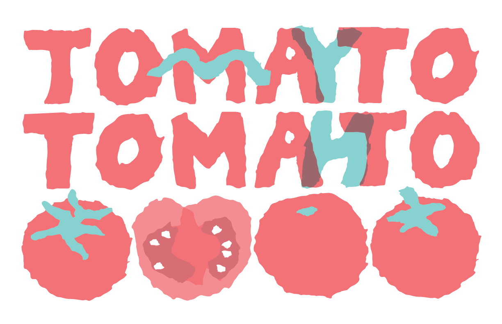
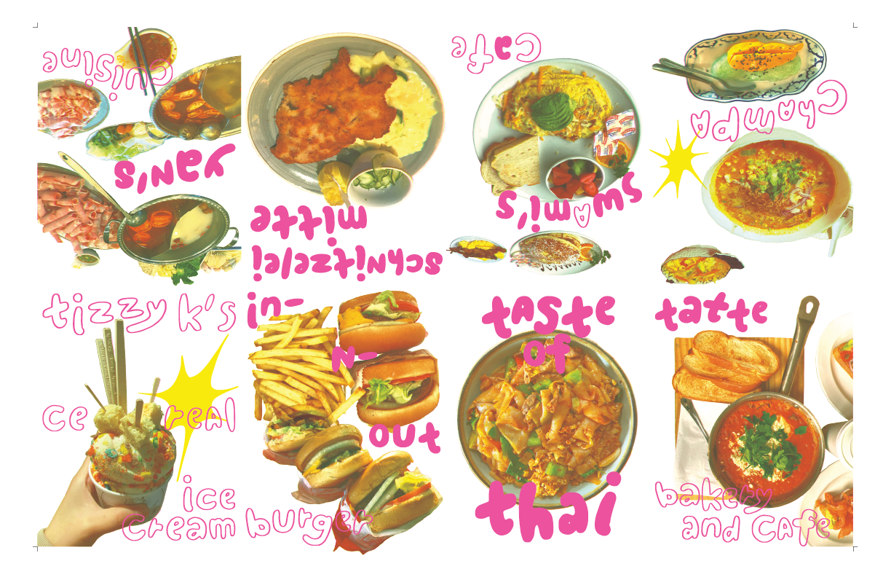

RISO print posters
Seeing RISO prints at creator markets as well as making them brings me an indescribable amount of joy!

A test print exploring the RISO printer, featuring tints, overprinting, knockouts, line weights, a bitmap image, and excerpts from Michelle Zauner’s Crying in H-Mart.

I hand-tore these shapes on paper, then scanned, vectorized, and reassembled them digitally.

Using photos and my own hand-drawn type, I separated each photo’s CMYK color channel and reassigned them new RISO colors. After printing, I then folded and cut a single sheet of paper to create an 8-page zine.